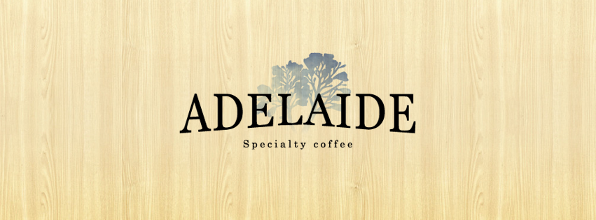
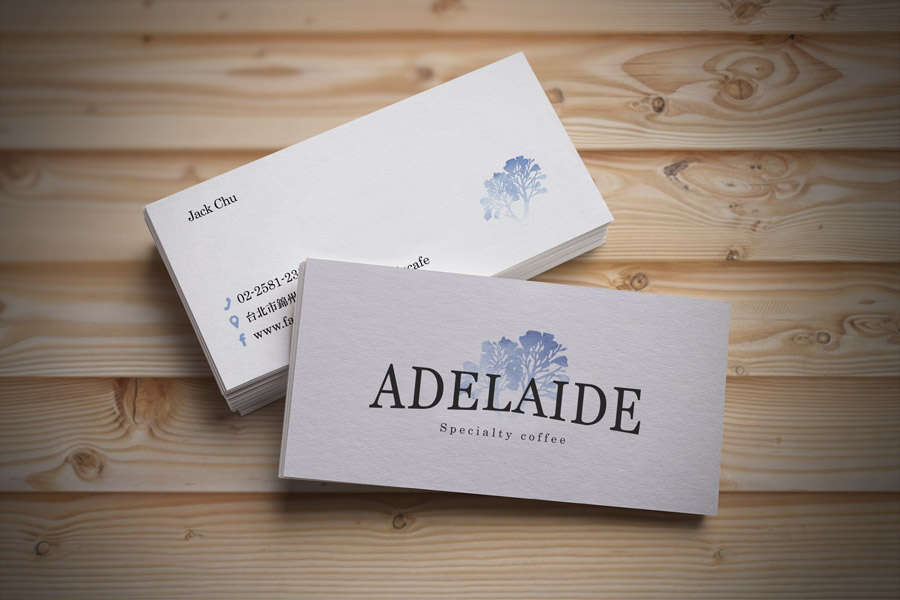
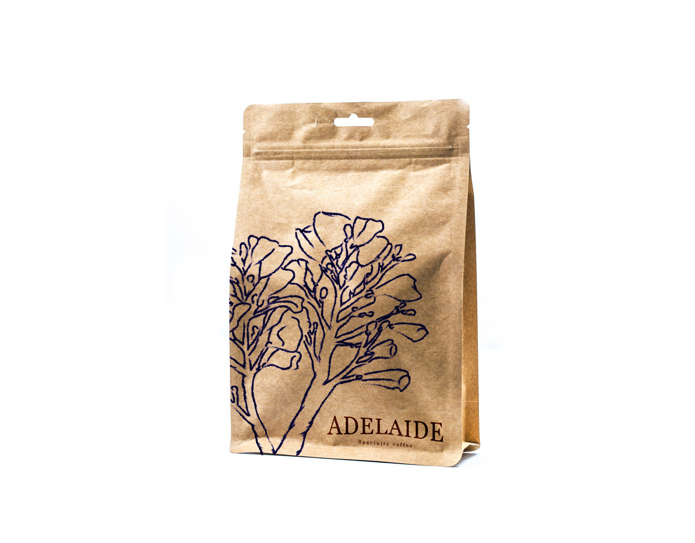
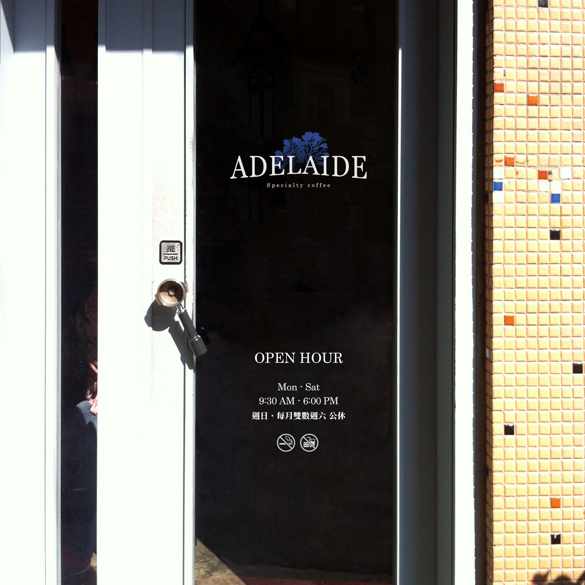

Adelaide Cafe | 阿德雷得咖啡
Adelaide Cafe 阿德雷得咖啡品牌設計
Adelaide是南澳(South Australia)的首府，也是店長夫婦在澳洲住了近兩年的地方。之所以沒有選擇雪梨，墨爾本這些大城市居住，只因為兩個很單純的原因：阿德雷得最著名的葡萄酒跟藝術節。
但一時間「摩登原始人」般的無趣生活，讓夫妻倆無所適從，甚至痛苦到想買機票打包回家。但有趣的是，半年過去，原本的不習慣卻變成喜愛。速度超慢的網路反而戒斷了手機成癮。帶來的是多出很多時間做些想很久卻遲遲未行動的計畫；夏天日照變長時，可以從事戶外活動或釣魚。六點商店關門則代表不再花錢逛街，反而多了時間可以開始學著做菜並跟朋友分享。
因為懷念南澳阿德雷得這個城市的的寬廣、自在與友善，店長夫婦回到台灣經營的第一間咖啡館就取名叫做阿德雷得。除了提醒自己在繁忙的都市生活中仍記住簡單的美好，也希望來店裡的人可以感受那片刻的自在。
- 品牌規劃
- 商標設計
- 
- 
- 
- 